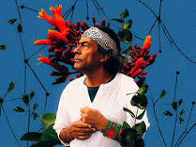
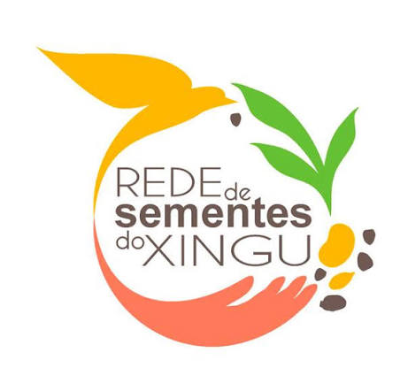

Apresentação do nosso projeto
Quem somos nós?
Somos alunas do primeiro ano do curso técnico em informática integrado ao Ensino Médio pela UFCIRJ Campus Nova Friburgo e criamos esse projeto através de uma iniciativa de biologia feita pelo nosso professor da matéria, e orientador do projeto, Anderson Fernandes Souza.
Qual nosso objetivo?
Nosso objetivo principal é incentivar a importante prática da sustentabilidade no cotidiano. O projeto aborda os três pilares do Desenvolvimento Sustentável, tratando também dos eixos social e econômico (além do ambiental, o mais evidente).
Objetivos de cada parte
Objetivo do site
Este site é uma forma de apresentação objetiva do projeto, em que apresentamos nossas ideias e objetivos de forma resumida. Para além disso, também conterá indicações relacionadas ao nosso projeto.
Objetivo da revista
Nossa revista foi pensada como um meio de esclarecer os conceitos que rondam o mundo da sustentabilidade, de uma maneira mais didática e analógica.
Clique aqui para visualizar o PDF da revistaObjetivo da "oficina"
A "oficina" é a parte prática do nosso projeto, com ela, podemos criar itens através da reutilização e da criatividade, mostrando que é possível fazer criações legais e úteis. Em nosso cenário atual, apenas produzimos pequenas amostras, mas buscamos expandir isso no futuro.
Indicações sustentáveis
Se sentiu interessado no tema? Então aqui vai algumas indicações
Ailton Krenak

Um líder indígena, escritor e filósofo brasileiro, nascido em 1953 (Minas Gerais). Ele é o primeiro indígena eleito para a Academia Brasileira de Letras(ABL). Defende os direitos dos povos originários e a preservação da natureza, focando em uma sustentabilidade radical e ancestral. Seus livros fazem críticas à diversos tópicos como o consumismo desenfreado, a separação homem-natureza e à destruição da natureza. Alguns de seus livros mais famosos são: Ideias para adiar o fim do mundo, A Vida Não É Útil e Futuro Ancestral.
Rede de Sementes do Xingu

É a maior rede de coleta comunitária de sementes do Brasil. Criada em 2007 a partir da campanha Y ikatu Xingu, esse projeto é responsável por coletar e comercializar sementes nativas do Cerrado e da Amazônia> Atualmente, possi mais de 700 coletores (de etnias indígenas, grupos extrativistas e assentamentos familiares) e contribuiu para a restauração de quaase 11.500 hectares de áreas degradadas.
Clique aqui para acessar o site oficial da rede